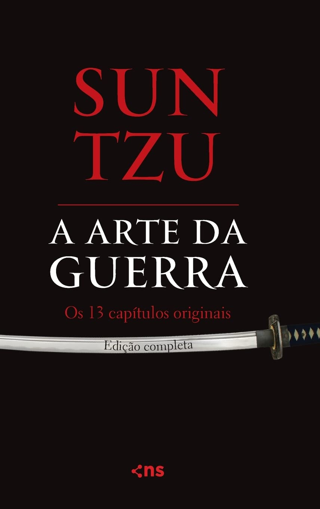

| A ARTE DA GUERRA | |
|---|---|
|  |
Sinopse: “Se você conhece o inimigo e conhece a si mesmo, não precisa temer o resultado de cem batalhas. Se você se conhece, mas não conhece o inimigo, para cada vitória grande, sofrerá também uma derrota. Se você não conhece nem o inimigo e nem a si mesmo, perderá todas as batalhas…” A arte da guerra é sem dúvida a bíblia da estratégia, sendo utilizada amplamente no mundo dos negócios, conquistando pessoas e mercados. Na paz, preparar-se para a guerra; na guerra, preparar-se para a paz. A arte da guerra é de importância vital para o Estado. É uma questão de vida ou morte, um caminho tanto para a segurança como para a ruína. Assim, em nenhuma circunstância deve ser negligenciada. Desta maneira começa o notável documento chinês, escrito há cerca de 2500 anos, no qual é registrada a sabedoria de Sun Tzu, filósofo que se tornou general. Os conselhos de Sun Tzu podem ser usados de diferentes formas e para diversos campos do conhecimento humano. São muito úteis, principalmente, para jovens executivos e empreendedores, assim como para chefes de Estado e comandantes. Em A arte da guerra, são discutidos todos os aspectos da guerra – táticos, hierárquicos e humanos, entre outros – numa linguagem tão poética quanto didática. James Clavell, autor de prestígio mundial, assina o prefácio, onde cita alguns preceitos do livro e os contextualiza em nosso cotidiano. Uma obra para ser lida não apenas por todo comandante ou oficial, mas por qualquer pessoa interessada na paz. Não surpreende que o livro seja citado em filmes e constantemente aplicado para solucionar os mais recentes conflitos do nosso dia-a-dia. Lançamento: 29/11/2010 Título original: The Art of War Número de páginas: 128 Autor Sun Tzu |